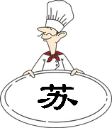
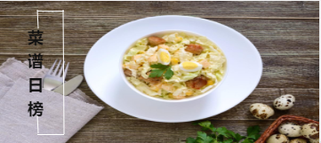

<ion-header>
  <ion-navbar color="bgblue">
    <button ion-button menuToggle>
        <ion-icon name="md-contact" id="my"></ion-icon>
      </button>
    <ion-title text-center>攻略说</ion-title>
    <ion-buttons end>
      <button ion-button ion-only (click)="search()" id="search">
        <ion-icon name = "search"></ion-icon>
      </button>
    </ion-buttons>
  </ion-navbar>
</ion-header>
  <ion-menu [content]="mycontent">
    <ion-content style="background:aqua">
      <ion-list>
        <p>some menu content, could be list items</p>
      </ion-list>
    </ion-content>
  </ion-menu>
  <ion-nav #mycontent [root]="rootPage"></ion-nav>
  <ion-content>
      <ion-grid text-center >
          <ion-row>
            <ion-col col-3>
              
            </ion-col>
            <ion-col col-3>
             
            </ion-col >
            <ion-col col-3>
              
            </ion-col>
            <ion-col col-3>
              
            </ion-col>
          </ion-row>
      </ion-grid>

      <ion-slides pager="true" autoplay="1000" loop="true" class="sli">
          <ion-slide>
            
          </ion-slide>
          <ion-slide>
            
          </ion-slide>
          <ion-slide>
            
          </ion-slide>
      </ion-slides>
      <div id="rank1">1</div>
      <div id="rank2">2</div>
      <div id="rank3">3</div>
      <h1 ng-model="Food.name"></h1>
<h1>{{item}}</h1>
  </ion-content>

